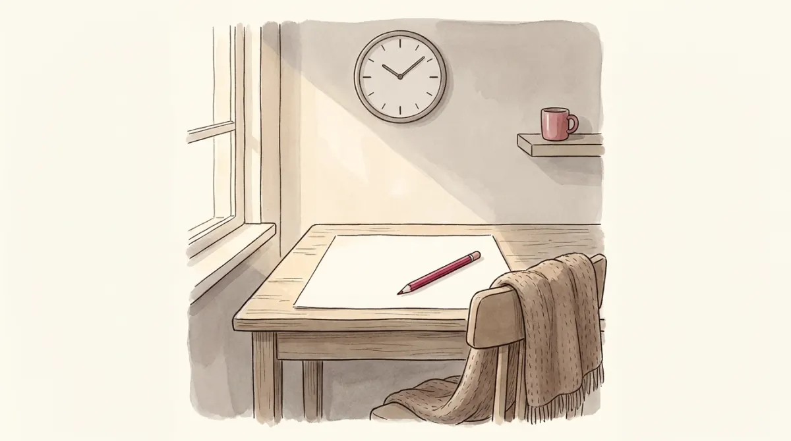

Foundations of Politics · Prof. Agostinis · the whole course, one sitting
The Exam Room
10 multiple choice + 2 open questions60 minutesgraded /30 · pass at 18

How this works
The real structure: a multiple-choice section (10 questions, 1.8 points each) and two open questions (6 points each, about 300 words), total 30, pass at 18. Timing here is 60 minutes; the official time can differ, so treat the clock as training pressure, not gospel.
MCQs get no feedback until you hand in, exactly like the real thing. You can change answers freely.
The open questions are the special part: write your ~300 words in the box, and after handing in you grade yourself against the real-style correction grid, checkbox by checkbox, the way the professor's published guidelines do it.
Strategy from Poli-00: bank the definitions first (they are a third of each open question), name-explain-example every discussed item, and keep one sentence for the close.
Before you start, your toolkit
from Poli-00 The answer recipe: definition (2 pts) → N items, each named + explained + one example → one closing sentence. About 300 words means about three discussable items.
from Poli-01 to 06 The machinery: power vs authority, Weber's monopoly, Rokkan, Dahl's two dimensions, totalitarian vs authoritarian, the three wirings, the six engines of executive rise.
from Poli-07 to 13 Actors and arenas: Duverger, cleavages, party functions, determinants of group power, the four ages, the thin jacket, the two logics, the LIO's three components, skeptic vs cynic.
Ready?
The clock starts when you press the button. Sit somewhere quiet, write the open answers for real (the self-grading only means something if there is an answer to grade), and remember: 18 of 30 passes.
60:00MCQ answered: 0 / 10
Section A · Multiple choice (1.8 points each)
Section B · Open questions (6 points each, about 300 words)